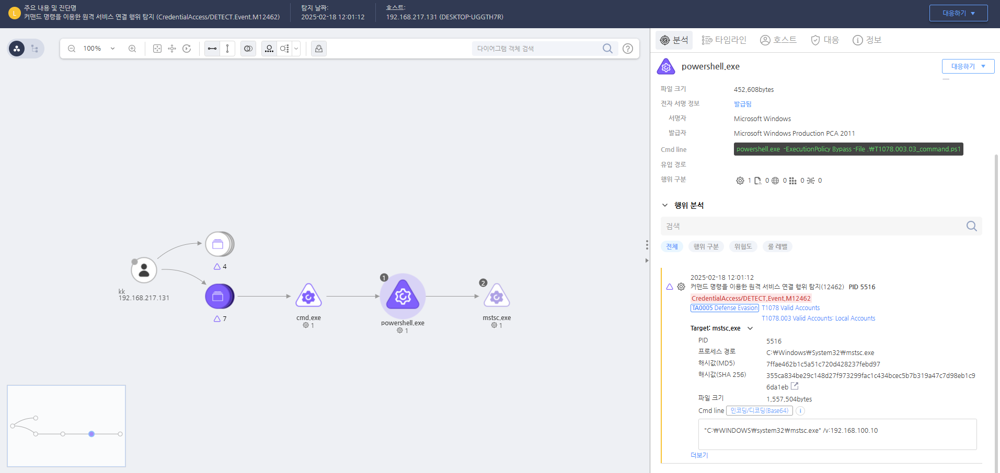

T1078.003.03 시스템 기본 관리자 계정 사용(DB Server)
D3FEND
MITRE ATT&CK 액션을 기준으로 대응 방안을 작성
Detection
커맨드 명령을 이용하여 원격 서비스를 연결하는 행위를 탐지했습니다.
Detection(EDR)

https://172.18.10.125:8903/#/analysis/alert/67b3fa58002dc6cc00000803
Response
공격자에 의해 PC가 제어되었을 가능성이 있으므로 호스트 네트워크를 격리합니다.
Mitigations
계정 사용 제한
- 로컬 계정의 사용을 최소화하고, 가능한 경우 도메인 계정을 사용하여 중앙 집중식으로 관리합니다.
강력한 비밀번호 정책 시행
- 로컬 계정에 대해 복잡하고 예측하기 어려운 비밀번호를 사용하고, 정기적으로 변경하도록 정책을 수립합니다.
다단계 인증(MFA) 도입
- 로컬 계정에 대한 접근 시 추가적인 인증 수단을 요구하여, 자격 증명 탈취로 인한 부정 접근을 방지합니다.
계정 사용 모니터링
- 로컬 계정의 로그인 시도와 사용 내역을 지속적으로 모니터링하여, 비정상적인 활동을 신속하게 탐지하고 대응합니다.
불필요한 계정 비활성화
- 사용되지 않는 로컬 계정을 식별하고 비활성화하여, 잠재적인 공격 표면을 줄입니다.
Affected Techniques
Action 실행시 함께 영향을 받는 다른 Techniqes
| ATT&CK |
| T1021.004 |
| T1078.003 |
|D3FEND|
|:-----------:|